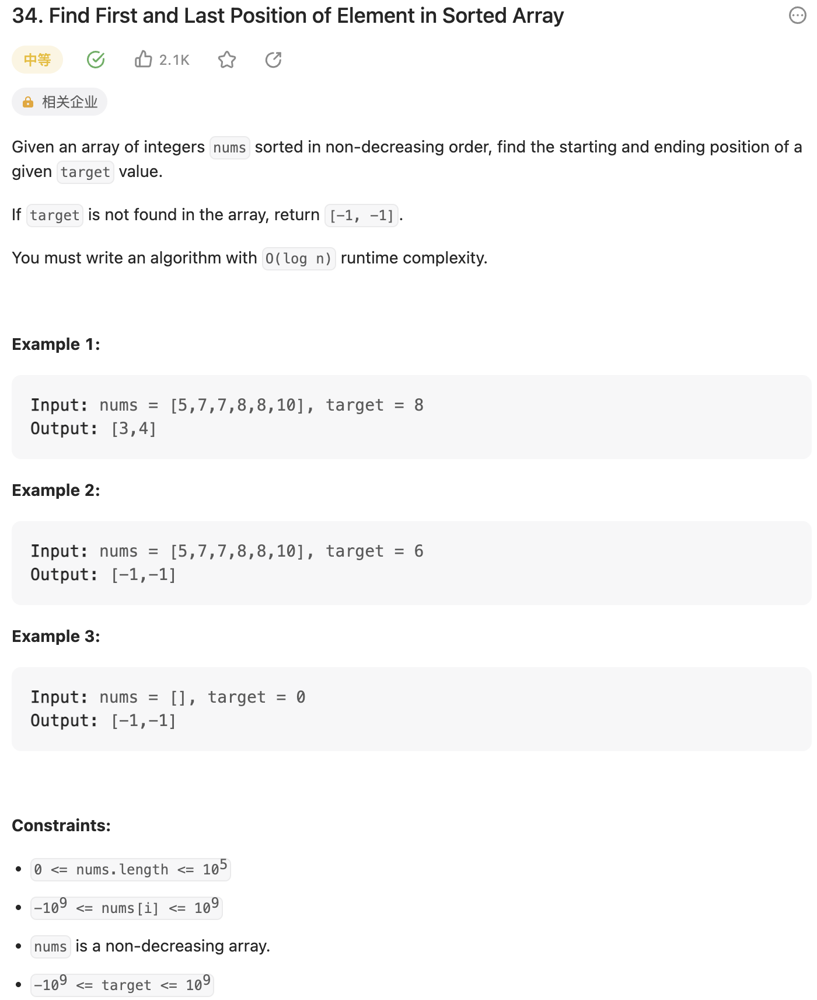
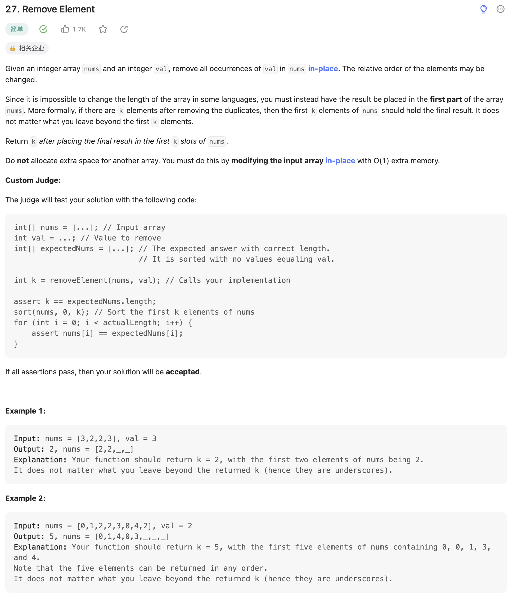

代码随想录算法训练营第1天 | 704. 二分查找、27. 移除元素
希望自己能够坚持下去
自己的小破站好久没更了就是说。
二分查找
适合条件
给定一个有序的数组，从其中找出指定的元素的位置
思路
将查找区间一分为二，通过对比区间中间值与目标值的大小来确定：
- 中间值是否就是目标值所在
- 若中间值不是目标值，确定下个循环的查找区间的移动方向
跳出循环的条件，区间的左边界大于区间的右边界
例题
题目的描述就是给定了有序数组，在O(logn)的时间内找出给定值的索引，若给定值不存在，则输出-1。
在O(logn)的时间内完成这个操作，必定是需要使用和区间划分有关的方法。
根据区间定义的不同，有两种解题方法。
解法一
如果目标值在区间[left, right]内 1
2
3
4
5
6
7
8
9
10
11
12
13
14
15
16
17
18
19
20
21
22
23
24
25class Solution {
public:
int search(vector<int>& nums, int target) {
int size = nums.size();
// 下面一行确定初次循环时的查找区间的左右边界
int left = 0, right = size - 1;
while (left <= right) { // 循环结束条件
/**
* 根据左右边界计算出中间位置的索引，
* 之所以不使用 mid = (left + right) / 2 是因为防止溢出
*/
int mid = left + ((right - left) / 2);
if (nums[mid] == target) return mid; // 若中间值为目标值，则返回中间值
if (nums[mid] > target) { // 若中间值大于目标值，即要找的目标值应该在中间值的左侧，则将区间右边界向左调整
right = mid - 1;
continue;
}
if (nums[mid] < target) { // 若中间值小于目标值，即目标值应该在中间值的右侧，则将区间左边界向右调整
left = mid + 1;
continue;
}
}
return -1; // 当找不到目标值时，返回 -1
}
};
解法二
如果目标值在[left, right)内 1
2
3
4
5
6
7
8
9
10
11
12
13
14
15
16
17
18
19
20
21
22
23
24class Solution {
public:
int search(vector<int>& nums, int target) {
// 下面一行确定初次循环时的查找区间的左右边界
int left = 0, right = nums.size();
while (left < right) { // 循环结束条件
/**
* 根据左右边界计算出中间位置的索引，
* 之所以不使用 mid = (left + right) / 2 是因为防止溢出
*/
int mid = left + ((right - left) / 2);
if (nums[mid] == target) return mid; // 若中间值为目标值，则返回中间值
if (nums[mid] > target) { // 若中间值大于目标值，即要找的目标值应该在中间值的左侧，则将区间右边界向左调整
right = mid;
continue;
}
if (nums[mid] < target) { // 若中间值小于目标值，即目标值应该在中间值的右侧，则将区间左边界向右调整
left = mid + 1;
continue;
}
}
return -1; // 当找不到目标值时，返回 -1
}
};
类似题目
分别利用二分法找最左边的目标值和最右侧的目标值。

1
2
3
4
5
6
7
8
9
10
11
12
13
14
15
16
17
18
19
20
21
22
23
24
25
26
27
28
29
30
31
32
33
34
35
36
37
38
39
40class Solution {
public:
vector<int> searchRange(vector<int>& nums, int target) {
int leftBorder = getLeftBorder(nums, target); // 分别调用封装好的函数去找左右边界，性能可能稍差，但代码逻辑会清晰些
int rightBorder = getRightBorder(nums, target);
if (leftBorder == -2 || rightBorder == -2) return {-1, -1}; // 不存在目标值的返回
if (rightBorder - leftBorder > 1) return {leftBorder + 1, rightBorder - 1};
return {-1, -1};
}
int getLeftBorder(vector<int> &nums, int target) {// 找左边界，其实是找目标值的左侧紧挨着的非目标值的数
int left = 0, right = nums.size() - 1;
int leftBorder = -2;
while (left <= right) { // 循环结束条件
int mid = left + ((right - left) / 2); // 求中间位置
if (nums[mid] >= target) {// 由于要找的是左边界，当中间值大于等于目标值时，应当将当前寻找的边界取中间值左侧
right = mid - 1; // 右边界取在中间值左侧
leftBorder = right; // 为了处理可能存在的中间值等于目标值的情况，要将寻找的左边界置为当前的右边界
} else { // 若中间值小于目标值，证明要找的边界在中间值右边
left = mid + 1;
}
}
return leftBorder;
}
int getRightBorder(vector<int> &nums, int target) { // 找右边界，其实是找目标值右侧紧挨着的非目标值的数
int left = 0, right = nums.size() - 1;
int rightBorder = -2;
while (left <= right) { // 循环结束条件
int mid = left + ((right - left) / 2);
if (nums[mid] > target) { // 中间值大于目标，应该取左区间
right = mid - 1;
} else { // 中间值小于等于目标，应该取右区间，并更新rightBorder为右区间的首位
left = mid + 1;
rightBorder = left;
}
}
return rightBorder;
}
};
移除元素
题目要求
给定一个数组，和一个值，将数组中等于给定值的数据移出，返回剩下的数据组成的数组以及该数组的大小。 
思路
解法一
暴力法，没有什么是for循环嵌套不能解决的（然后时间复杂度就上去了捏）
思路是，一个for循环用于遍历给定数组，遍历过程中若遇到与给定值相同的数，则使用一个新的for循环，将当前位置之后的全部数据，向前移动一位，同时还需要注意将遍历的索引置于正确位置。
1 | |
两个for循环且每个循环的循环次数与给定数组的大小线性有关，故时间复杂度为\(O(n^2)\)。
使用了常数个变量，故空间复杂度为\(O(1)\)。
解法二
双指针法
思想是同时保留两个指针，快指针用于遍历原数组，慢指针用于保存结果数组。当快指针遇到与给定值相同的数据时，什么也不做，只是单纯地将快指针移动到下一位；若快指针遇见了非给定值的数，则将快指针当前指向的数拷贝至慢指针指向的位置，并将慢指针后移一位。
1 | |
使用了一个for循环，循环的次数和数组大小线性相关，故时间复杂度为\(O(n)\)。
使用了常数个变量，故空间复杂度为\(O(1)\)。
解法三
另一种双指针法
类似于快速排序分区的过程，左指针从数组左侧出发，依次寻找一个等于给定值的数，等待被替换，找到后，右指针从数组末尾出发，找到一个不为给定值的数据，用于替换左指针指向的数据。
1 | |
代码中循环次数和数组大小线性相关，故时间复杂度为\(O(n)\)，使用了常数个变量，故空间复杂度为\(O(1)\)。
代码随想录算法训练营第1天 | 704. 二分查找、27. 移除元素